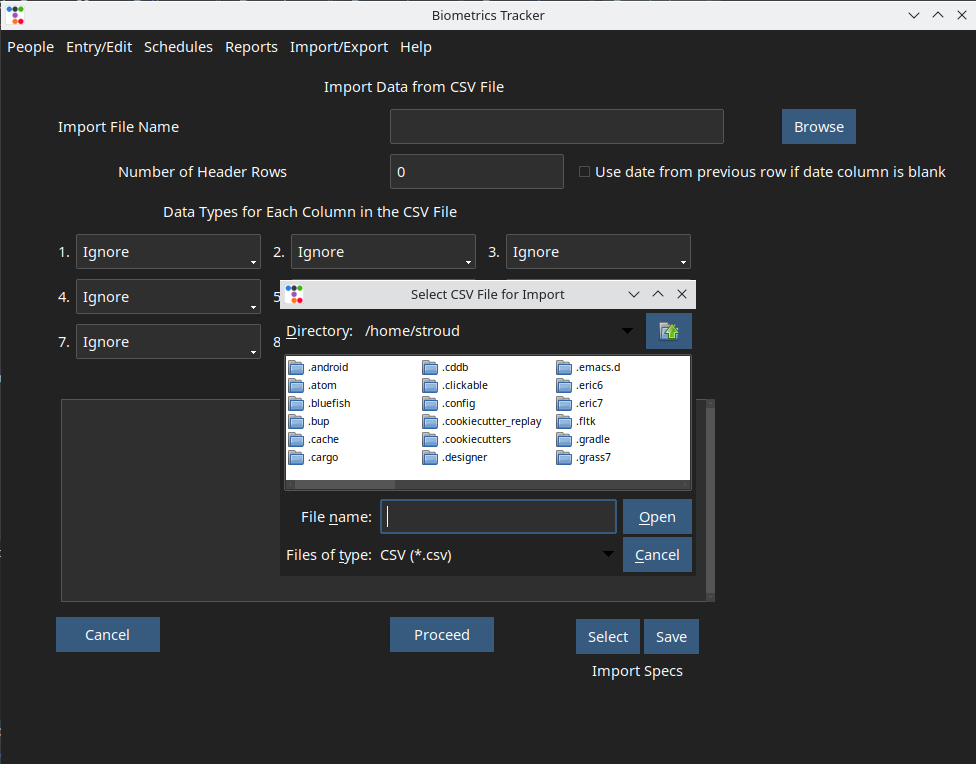
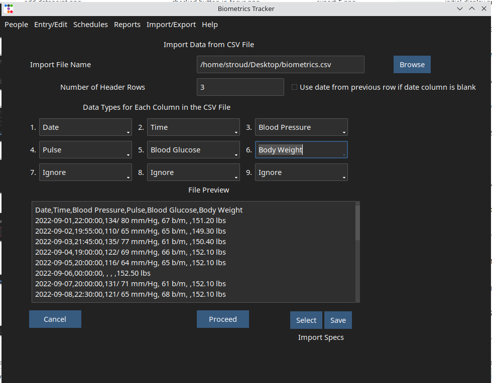
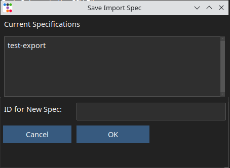
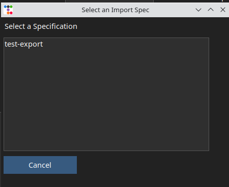
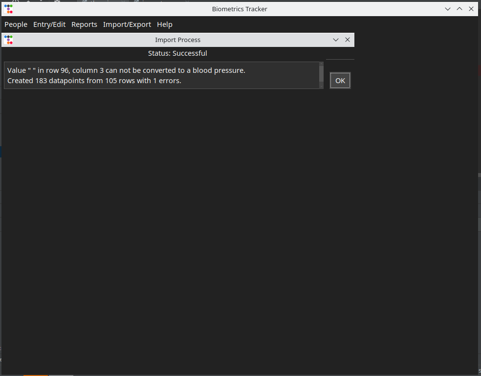
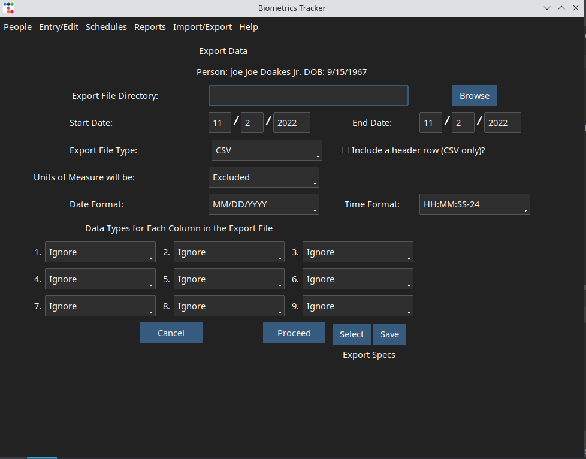
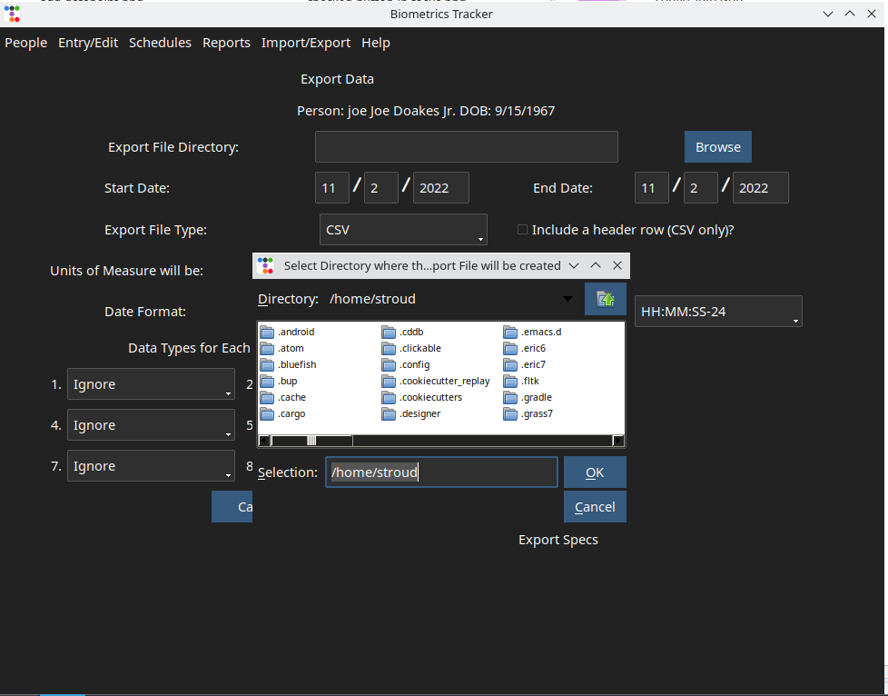
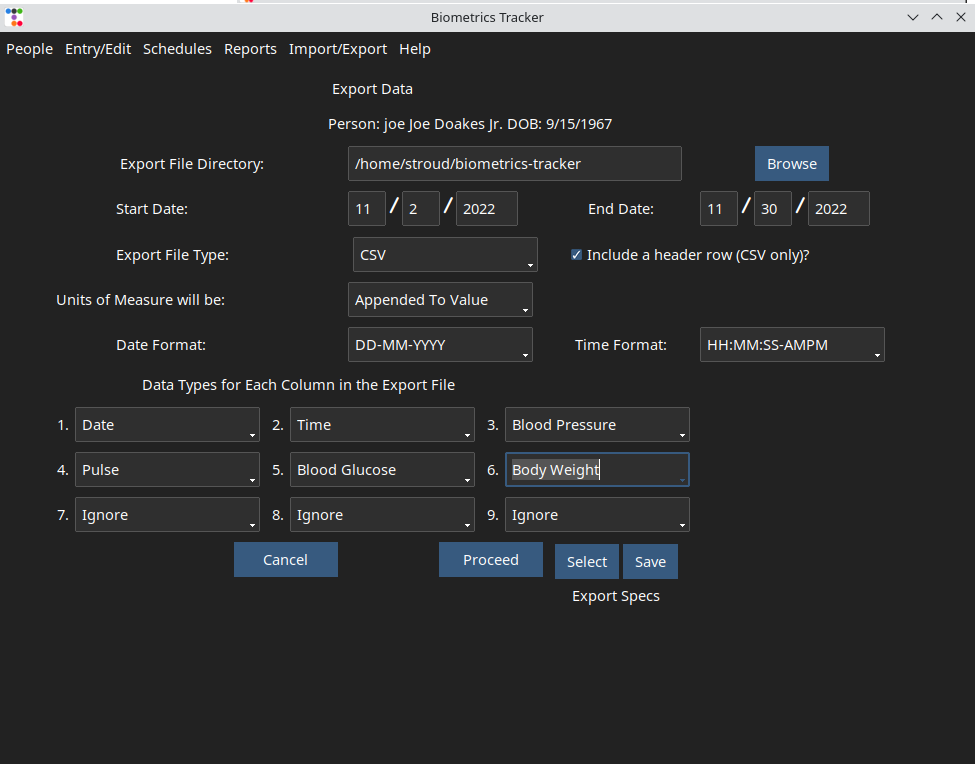
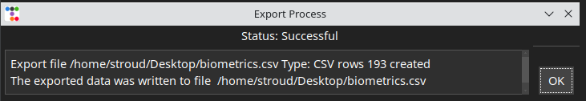
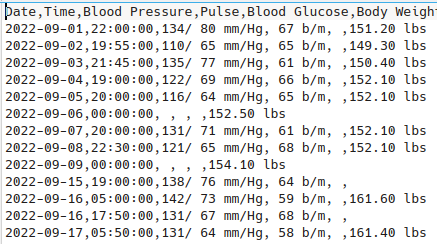

If you've been using a spreadsheet to keep track of your readings, they can probably be imported into the Biometrics Tracker application. This requires that the spreadsheet have columns for the date, time (optional) and the values for each type of reading in it's own column. You can create a Comma Separated Values (CSV) file from your spreadsheet application by selecting the "Save As" menu option and selecting the CSV format, or by selecting an "Export" function that allows you to create a CSV file. If you have column headings, those can be included in the file. Some CSV conversions ask if you want to enclose string (alpha character) values in quotes. The Biometric Tracker's import function will handle quoted of unquoted strings. If your data includes, commas however, select the option to quote strings if it is available.
Once you have created the CSV file and you know its location in your directory structure, select the option from the menu. If you are tracking information for more than one person, you will be presented with the mentioned previously. After you select the person associated with the data to be imported, you will be presented with a GUI similar to the one shown below. As with other application functions, if you are only tracking one person, this GUI will be presented immediately after you make the menu selection. It allows you to select the file to be imported and inform the import function about the format of the file. If you click the button to the right of the file name entry field, a file selection dialog will be presented. Select the file to be imported.
The first thirty lines of the file will be displayed in the pane in the lower portion of the GUI. Next there are three things you have to know about the format of the CSV file. Examining the displayed file will help you answer these questions.
The and buttons located in the lower right area of the window allow you save save and reuse the choices you have made regarding the format of your import file. This is useful if you will be doing imports periodically; you won't have to scratch you head to remember what selections you made previously. The set of selections you make are referred to as an Import Specification. Each Specification is identified by an ID that you assign. Clicking the button will display a pop-up dialog showing you a list of Specification IDs you have assigned in the past and prompting you to enter an ID for the new Specification. Note that you must click the button before you click the button.
When you want to re-use a specification, click the button. You will be presented with a dialog showing you a list of ID's of saved Import Specifications. Double click on the id of the specification you want to use.

The entry fields on the GUI will be filled with the values contained in the Import Specification you selected
When the import process is complete, a GUI similar to the one shown below will be presented. Any issued that occurred in the importation process will be noted, along with the number of CSV file rows processed and application database rows produced. It's a good idea to produce a so that you can examine the results of the import process in detail.
The information you enter into the Biometrics Tracker database belongs to you. That means you should be able to move it to other applications. The Biometrics Tracker application can export data to two formats; a Comma Separated File (CSV) or to the SQLite3 relational database format. I chose to implement these formats because they are widely used. You can import the CSV file into a spreadsheet application and the SQLite3 database is open source, it is very widely used and has been around for twenty years. Most mobile applications that store data directly on the mobile device use this database.
To access the Export function, select the option from the menu A GUI similar to the one show below will be displayed.
The first step is to select a folder where the export file will be placed by entering the folder path into the first entry field on the GUI. It is important to note the difference between this prompt and a similar one on the window. There, you were prompted to select a file to be imported... here you are being prompted for a folder where the export file will be placed. An example of the selection dialog is shown below:
There are quite a few options presented on this window. If you are creating an export file to be used to import data into another non-spreadsheet application, make sure that you have a detailed specification of the formatting requirements for the file. If you wish to load it into a spreadsheet for your own use, you can be more flexible. Before proceeding with the creation of the file, you must be able to answer these questions.
The Export function offers the same ability to save and select Specifications as the Import function. If you export data on a periodic basis, this feature can save you some head scratching. When you are satisfied with your selections, click the button. If you do not want to continue with the export process, click the button.
When the export file creation is complete, a message similar to the one shown below will be displayed. Note the export file pathname. You will need to know this to import the information into another application.
The image shown below shows a portion of a CSV export file that was loaded into the Libre Office spreadsheet application.
